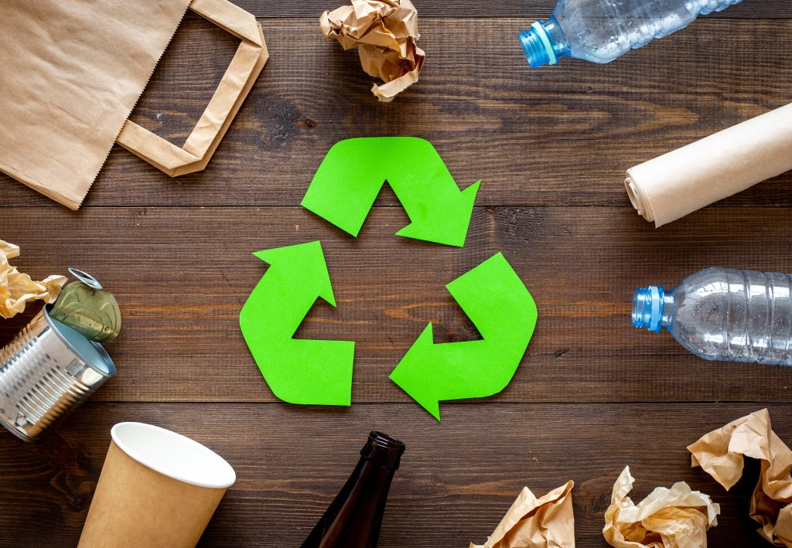

Início
Sobre Nós
Dicas de Reciclagem
Locais de Troca
Faça você mesmo
Jogos
Últimas Notícias
Deixe seu Feedback

Pensar em sustentabilidade é pensar na família no próximo e em você mesma!
Sacolinhas feitas com caixa de leite ♻️
(Ideal para lembrancinhas)
Materiais Usados ♻️
Cola
Pincel
Tesoura
Caixa de leite
Fita de cetim
Tecido ou E.V.A
Recipiente para colocar cola
Furador
Fita de sua preferência e com a cor, o estilo, o modelo ou a estampa também de sua preferência.
Passo a passo:
Comece separando todos os materiais que você vai utilizar em seu artesanato.
Corte o fundo da caixa de leite, mas deixando um dos lados.
Raspe os escritos da embalagem. Encape com o papel e a cola.
Dobre as laterais para dentro e curve a aba para baixo. Para finalizar a sua peça, fure todas as partes, para amarrar a fita. E está pronto!
Luminaria ♻️
Materiais Usados ♻️
Cola
Balão
Tesoura
Barbante
Bexiga
Luzinhas pisca piscas ou um pendente simples com lâmpada
Passo a passo:
Encha a bexiga deixando a bola do tamanho que você deseja para a sua luminária.
Comece a enrolar o barbante na bexiga, o barbante não precisa ficar certinho, é interessante que ele seja enrolado em várias direções.
Passe bastante cola por cima do barbante já enrolado na bexiga.
Deixe a cola secar bem.
Fure a bexiga e retire-a de dentro da luminária de barbante.
Para terminar, coloque os pisca piscas dentro da luminária de barbante ou encaixe a luminária no pendente. Se você tiver uma lampada led, também pode usar dentro da luminária.
Porta Retrato de Papelão ♻️
Materiais Usados ♻️
Papelão
Régua
Estilete
Tesoura
Pincel
Super cola
Cola branca
Lapis ou Caneta
PVC transparente
Tecido ou papel decorado
Passo a passo:
O tamanho mais comum de fotos é 10 cm x 15 cm, por isso corte dois pedaços de papelão com pelo menos 5 cm extras de cada lado.
Caso queira fazer detalhes, uma borda ou algo assim, aumente as medidas;
Desenhe um retângulo de 14x9 dentro de um desses pedaços de papelão e corte com o estilete;
Cola nesse papelão e cole em um tecido;
Corte o excesso do tecido deixando o suficiente para colá-lo no verso desse retângulo; Use o estilete para cortar a parte do meio do tecido;
Corte o PVC com o mesmo tamanho dos seus pedaços de papelão e cole-o com super cola na parte interna da peça que tem o centro cortado;
Encape o outro pedaço de papelão com tecido e cole-o na parte de trás do PVC deixando um lado aberto, que será por onde você vai colocar a foto.
Vasos de Flores com Garrafa Pet ♻️
Materiais Usados ♻️
T.N.T
Tesoura
Tinta de tecido ou splay
Garrafas pet de qualquer tamanho
Passo a passo:
Desenhe uma linha na parte de cima da garra e próximo à base.
Recorte em ambas essas linhas.
Descarte a tampa.
Coloque a parte de cima virada para baixo dentro da base.
Na hora de plantar, coloque a terra com a planta na parte de cima e a água na base.
Tu já pensou que nossas praias gaúchas podem virar um LIXÃO?
Até 2050 haverá mais plástico do que peixes nos oceanos.
X